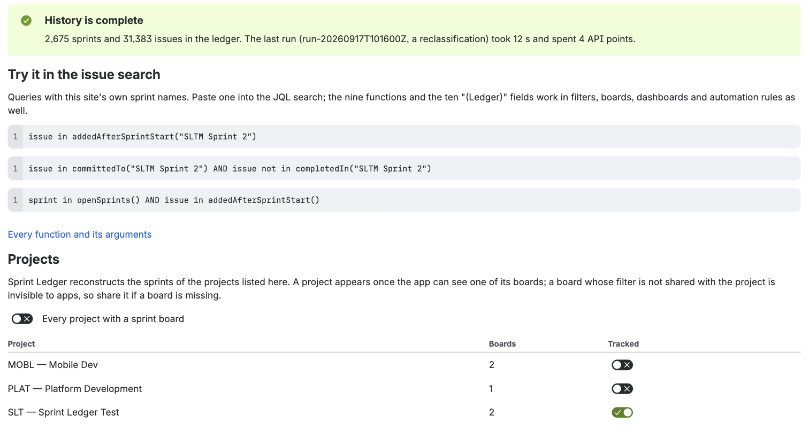
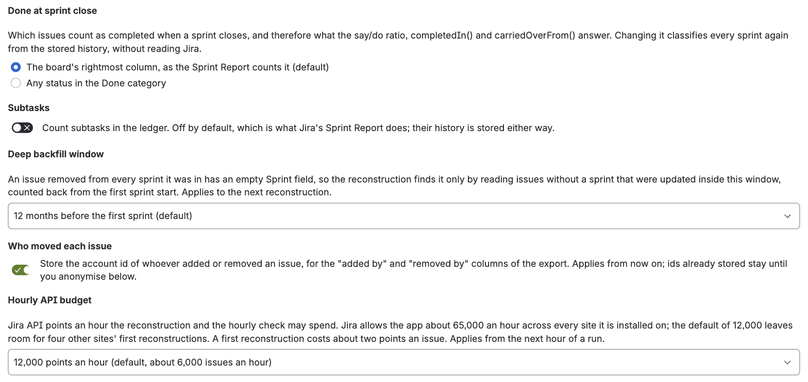
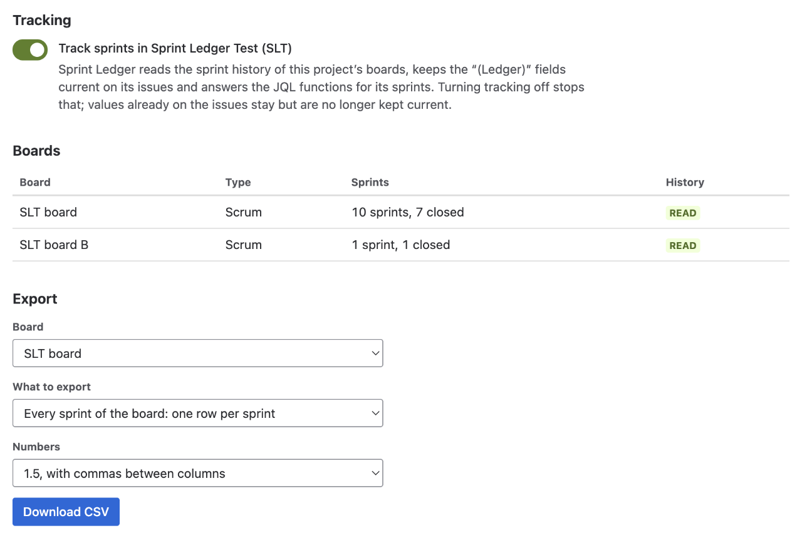

Sprint Ledger needs almost no administration: installing it starts the reconstruction of every sprint board's history, and from then on it keeps itself current. This page covers what there is to look at and change, and what to do when something looks wrong. Installing and the first hours are in Getting started.
Open Settings (the gear at the top right) → Marketplace apps, under Jira admin settings; Sprint Ledger is listed in the left sidebar under Apps (expand the sidebar if it is collapsed). The page's address is https://<your-site>.atlassian.net/jira/settings/apps/f613dc4c-4681-4e90-995c-64af11c8c08a/2c1950f7-2332-4d2e-85e8-c6e9b6a2f59b. It is not in the Apps menu of Jira's top bar, and Atlassian Administration's Connected apps page shows only the app's details and permissions. Only Jira administrators can open it. It reads only the app's own storage, so opening or watching it costs no Jira API budget; only the comparison with the Sprint Report reads Jira. It takes up to half a minute to appear.

At the top, a message says where the history stands:
Once a sprint has been classified, Try it in the issue search offers three queries with your site's own sprint names to paste into the JQL search.
Sprint Ledger tracks every project that has a board with sprints, unless you choose otherwise. Every project with a sprint board keeps it that way, including projects created later; turning it off lets you switch projects on and off one by one.
A project appears in the list once the app can see one of its boards. The app writes no field values into a project that is turned off, and its issues never appear in the functions' answers. Turning a project off stops following it; the values already on its issues stay but are no longer kept current. Turning it back on marks its boards as not read, and reading them again brings its history up to date.
A board's filter may take in issues from several projects, and Sprint Ledger counts every issue that was in one of a tracked board's sprints, whichever project it belongs to, as the Sprint Report does. A project with no board of its own never appears in the list; its issues are counted while Every project with a sprint board is on, and left out while projects are chosen one by one. Before version 2.13.0 a reconstruction read only the issues of listed projects, so a site with such boards should press Rebuild every tracked board once after the update.
The boards table lists each board the app has found, its project, how many sprints it has, and its state: pending (not read yet), running, waiting (for the hourly API budget), done, failed, or no sprints for a board that does not use sprints, such as a Kanban board, which is skipped.
Both are safe at any time: the ledger is rewritten in place, never duplicated, and the run pauses itself when the hourly API budget runs low and resumes on its own. A run reads only what it must: re-running one board classifies that board's sprints and the sprints its issues were also in, not the whole site. Last run shows each stage of the latest run with what it processed, the API points it spent and how long it took.
You rarely need either. The ledger is kept current from Jira's own events, an hourly check compares every active and recently closed sprint with Jira and repairs what an event missed, and a daily pass tidies up and refreshes the stored answers of the JQL functions.
Choose a tracked board and press Compare the last three closed sprints. For each sprint, the app reads Jira's own Sprint Report and compares it with the ledger issue by issue: completed, not completed, removed from the sprint, added after the start, and each issue's estimate at the start and at the close. Each sprint shows whether it agrees, a table of any issue the two sides list differently, the differences that have a documented reason, and whether the estimates agree; the line underneath adds up the sprints. Nothing is changed by the check.
The app's log records the result as counts and issue ids, never issue content, so that a difference you report can be followed up.

| Setting | Choices | A change |
|---|---|---|
Done at sprint close: which issues count as completed when a sprint closes, and so what say/do, completedIn() and carriedOverFrom() answer | The board's rightmost column, as the Sprint Report counts it (default); or any status in the Done category, which does not change when the board's columns are rearranged | Classifies every sprint again from the stored history, without reading Jira; minutes, not hours |
| Subtasks: whether subtasks count in the ledger | Off (default), as in the Sprint Report; their history is stored either way | Classifies every sprint again, as above |
| Deep backfill window: how far back the reconstruction looks for issues that were removed from every sprint they were in, whose Sprint field is therefore empty | Off; 6, 12 (default), 24 or 36 months before the first sprint; or every issue without a sprint, which is slow on a large site | Applies to the next reconstruction |
| Who moved each issue: store the account ID of whoever added an issue to a sprint or removed it, for the export's "added by" and "removed by" columns | On (default) or off | Applies from then on; IDs already stored stay until you anonymise them |
| Hourly API budget: Jira API points an hour the reconstruction and the hourly check may spend | 6,000 to 60,000; default 12,000, about 6,000 issues an hour | Applies from the next hour of a run |
The first two are locked while a reconstruction runs, so that every sprint is classified the same way.
The panel says what the app stores and how much of it there is now. Two actions, each behind a confirmation:
What is stored, where and for how long is in the privacy policy. The Licence panel below it shows the site's licence; during the private beta an install needs none.
Space settings (Project settings on some sites) → Apps → Sprint Ledger. A project's own administrators can use it without a Jira administrator, as can Jira administrators. It takes 15 to 20 seconds to appear.

Jira limits how much every app may call its API, in points an hour, and the limit is shared by every site an app is installed on. A first reconstruction costs about two points per issue that has ever been in a sprint; a site of 20,000 such issues takes three to four hours at the default budget. After that the app costs little: events cost nothing, and the hourly check spends about a point per active sprint.
The default of 12,000 points an hour leaves room for other sites' first reconstructions. Raise it on the admin page if your first reconstruction is large and you want it sooner; the run slows down rather than fails when the budget is spent.
Updates install on your site by themselves, with nothing for you to do: new fields, functions and fixes have all arrived that way during the beta. An update that asks for a new permission would appear in Jira's app management for an administrator to accept; the first one expected is licensing, when the app is listed on the Marketplace. The changelog lists every update.
Uninstall from Jira's app management like any other app. The ten fields disappear from Jira at once. Atlassian keeps the fields' values for 30 days and the app's storage for 28 days so that a site that uninstalled by mistake can get them back, then deletes both for good; the privacy policy has the details. To remove the ledger without uninstalling, use Delete all ledger data.